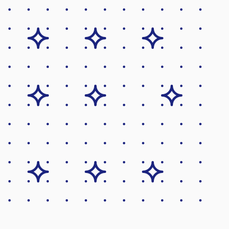
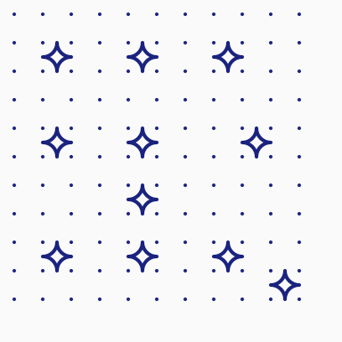
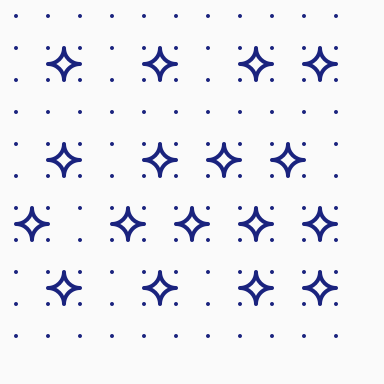

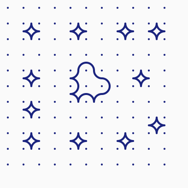
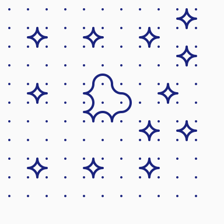
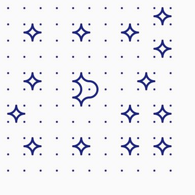
Seed (hash) drives identity: symmetry group and palette stay constant for a given seed. Score now drives complexity through three coupled dimensions — coverage (continuous 0→0.95), strand length (4 levels: compact / balanced / long / helix), and motif pool size (1→7 shapes from circle alone up to the full vocabulary). Same seed across the row → same family, increasing complexity. WithCoverage and WithStrandLength remain available as explicit overrides for fine control.
📊 Browse the 100-seed gallery: native palettes → | B/W test palette → (100 seeds × 4 scores × 2 coverage modes = 800 SVGs each)
🎛 Interactive playground: run go run -tags=kolavatardev ./cmd/kolavatar-playground and open http://localhost:8080/. Live controls for seed, score, grid, symmetry, coverage, strand length, palette; SVG re-renders on every change.
Five seeds × eight scores (0.0 → 1.0). Each row shows the same identity (group + palette) at increasing complexity. 11×11 grid.






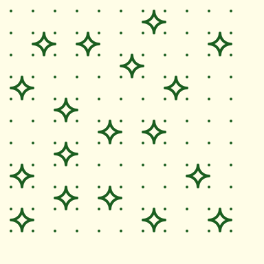

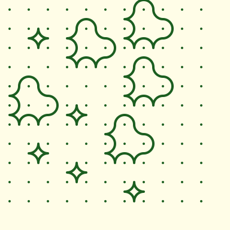
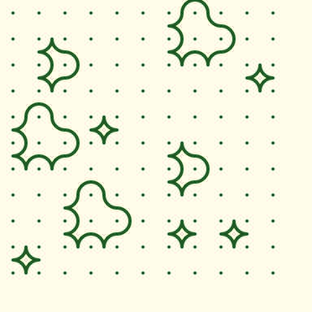
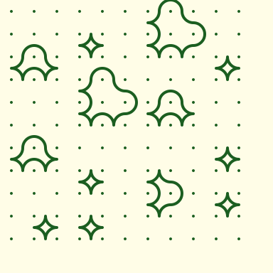
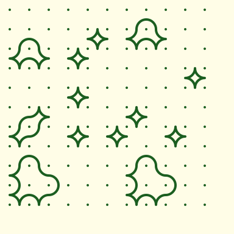
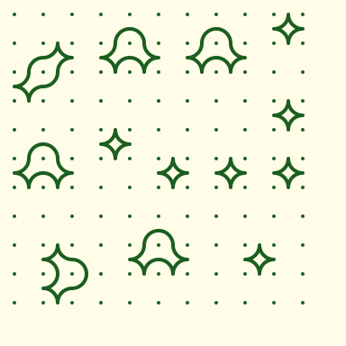
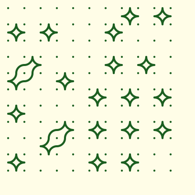


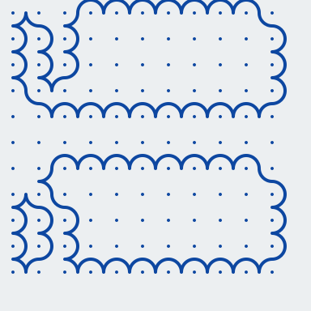


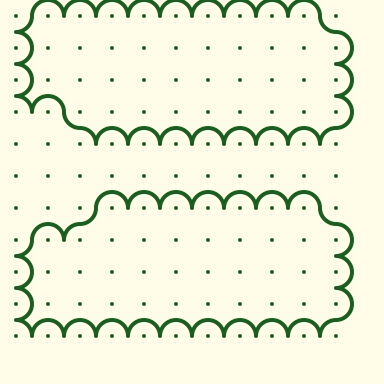


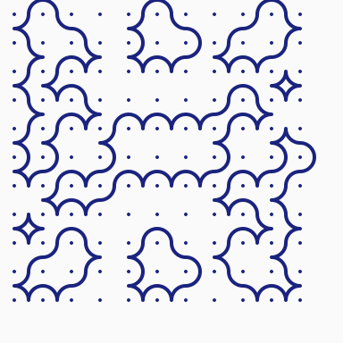


Same seed (asha@example.com), all 8 groups now via loop-walk generation. Strand counts in caption (a 4-fold symmetric kolam typically shows 4 mirrored strands by topology).


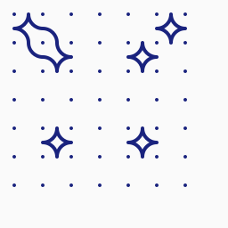
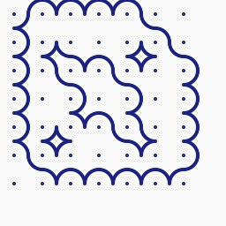

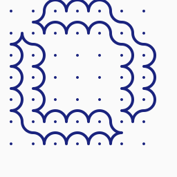
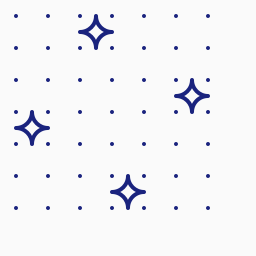

Same seed (asha@example.com). Rows: grids 5/7/9/11/13. Columns: forced symmetry 1 / m / 2mm / 4mm_d. Useful for spotting scaling behaviour and per-group character.
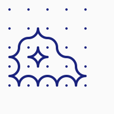
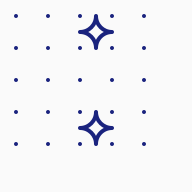
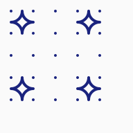
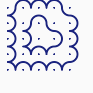

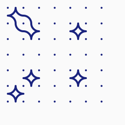


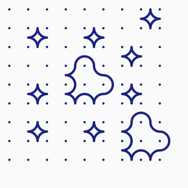
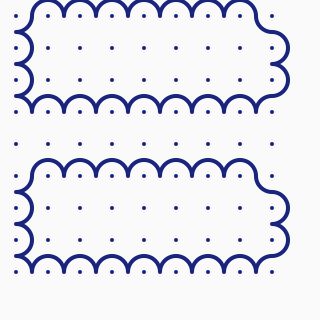
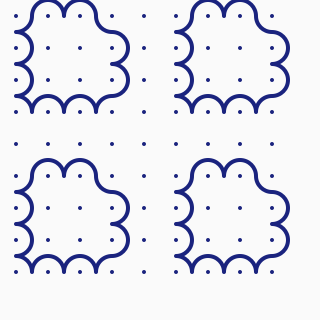
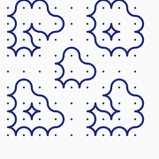


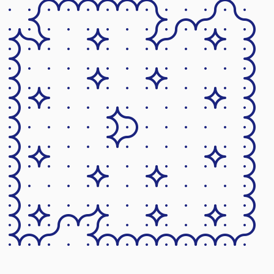
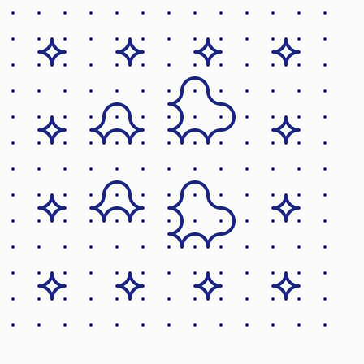
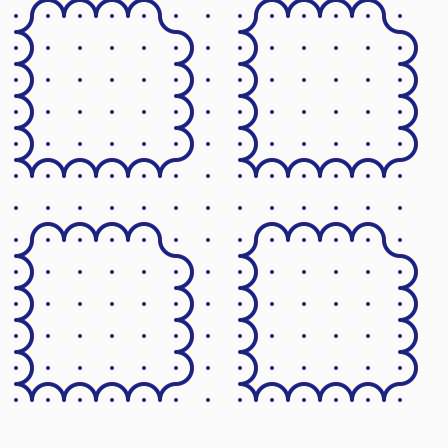
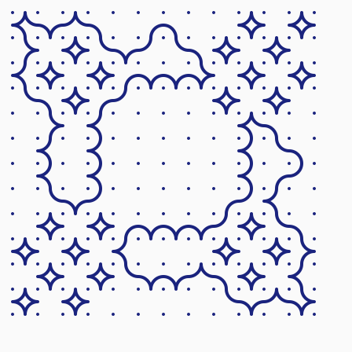
Same seed (asha@example.com), grids 7 and 11, four symmetries × four strand styles. Columns are: compact (sl=0, no merge, motifs only), balanced (sl=1, default — gentle merge), long (sl=2 + coverage 0.85, aggressive merge), helix (sl=3 + coverage 0.85, LERW filler walks + aggressive merge). Helix is the "small components connected by long winding strands" target: under group 1 the entire kolam collapses to a single ~80%-coverage strand.

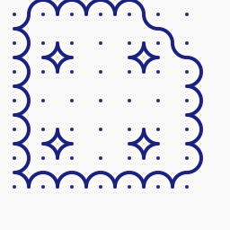
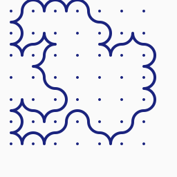


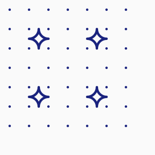
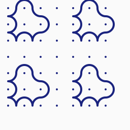


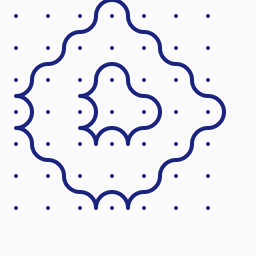


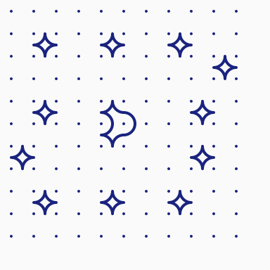


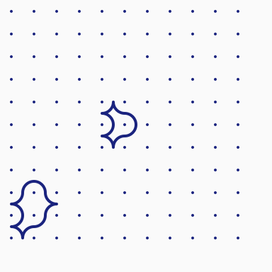
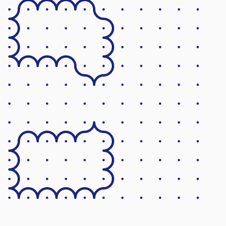


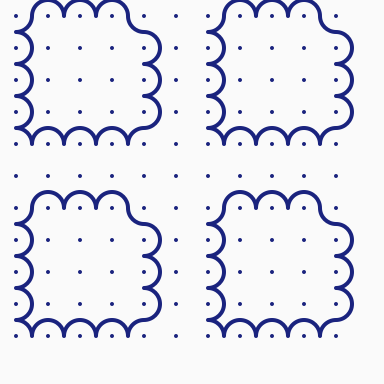

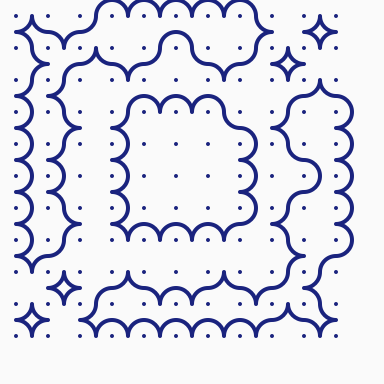